Shop here.
The Market Hall
Fresh produce, fish, meat, bread and makers’ stalls under the original iron roof: the daily marketplace where South Devon comes to shop.
Trade in the Market HallEst. 1871Market StreetNewton Abbot
Life is short. Hang out with good people. Eat the right food.
Newton Old Market is being brought back to life: the 1871 market hall in the heart of Newton Abbot, restored as a place where the people who grow it, make it and sell it are at the centre of the story, not the margins.
Market towns like ours have been hollowed out, and the food grown here rarely ends up on tables here. The NOM exists to change both, filling the old hall with South Devon’s growers, fishers, bakers, brewers and makers, so that shopping local is the easy, joyful choice again.
Stalls run by the folk who grow, catch, bake and make it, so every visit comes with flavour, provenance and a story.
A reason to come into town again, to shop, eat, gather and linger, while every pound spent stays close to home.
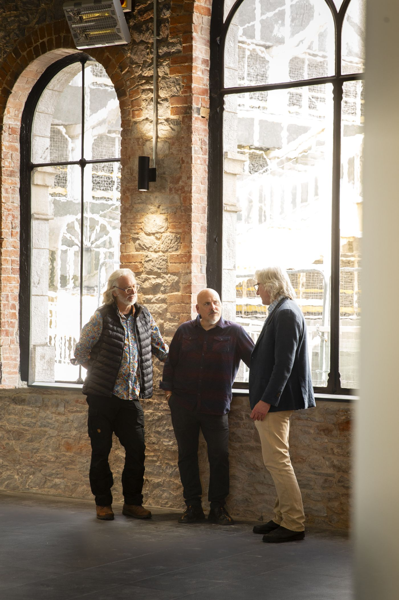
1871
Serving Newton Abbot for over 150 years. Restored in partnership with Teignbridge District Council, for the whole of South Devon.
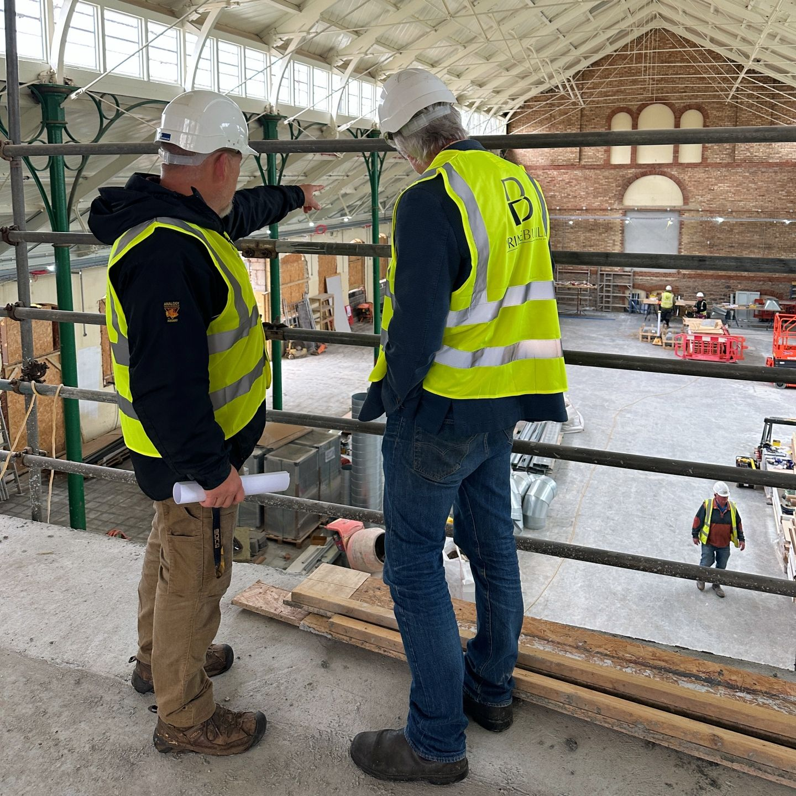
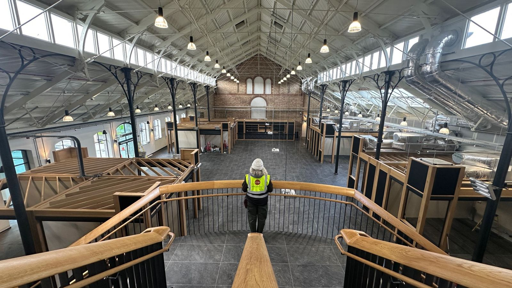
The 1871 hall is being carefully restored: the iron roof repaired, the brick arches opened up, and new oak staircases rising through the middle of it. Doors open soon.
Fresh produce, fish, meat, bread and makers’ stalls under the original iron roof: the daily marketplace where South Devon comes to shop.
Trade in the Market HallKitchens and counters cooking with what the market sells: a place to eat well, meet friends and taste exactly where you are.
Cook in the Food HallWhether it’s an intimate gathering or a feast for the ages: engaging experiences that feed local people with local produce. ‘The health of the land mirrors the health of the people’, so let’s celebrate.
Host something with usWe’re filling the market with food and goods from within 50 km of Newton Abbot, from land and sea. That means fresher food, far fewer food miles, and more of every pound staying with the people who actually grew, caught, baked or made what’s in your basket.
Decades of organic and biodynamic farming sit behind the market, shaping the way we connect field to fork.
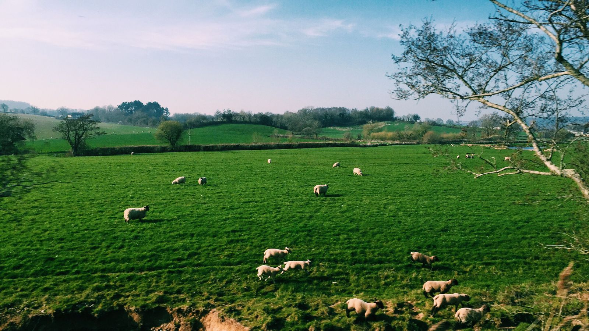
80%
The goal: four-fifths of everything sold here, genuinely local.
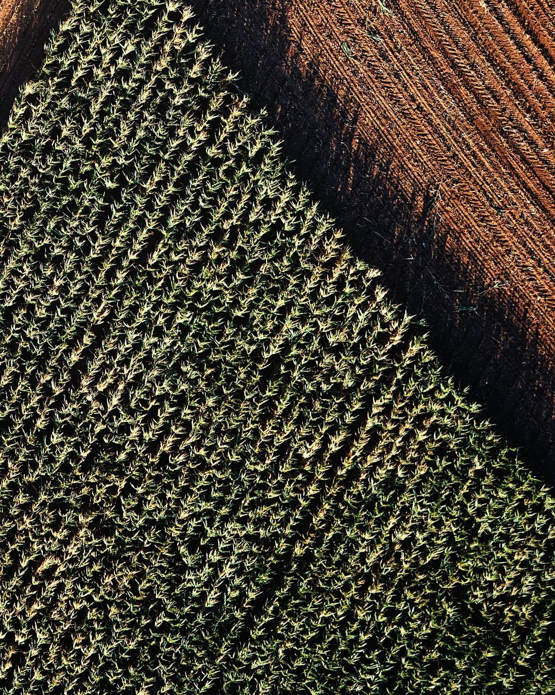
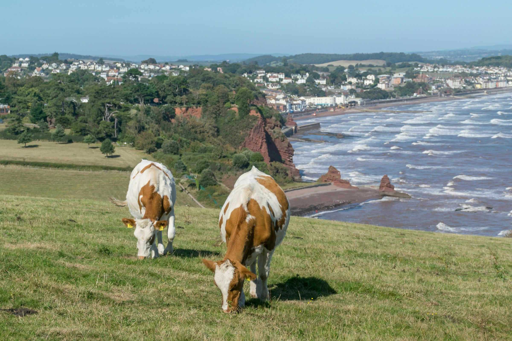
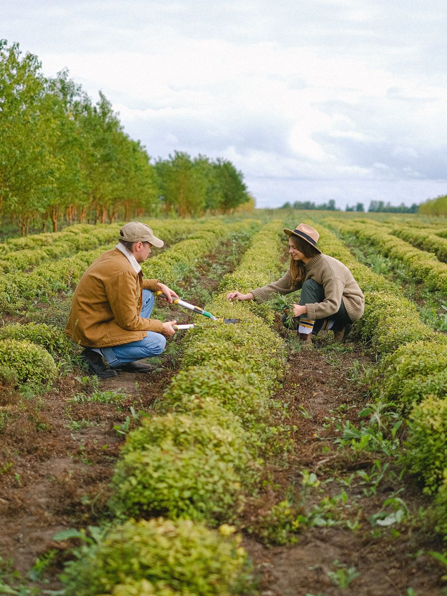
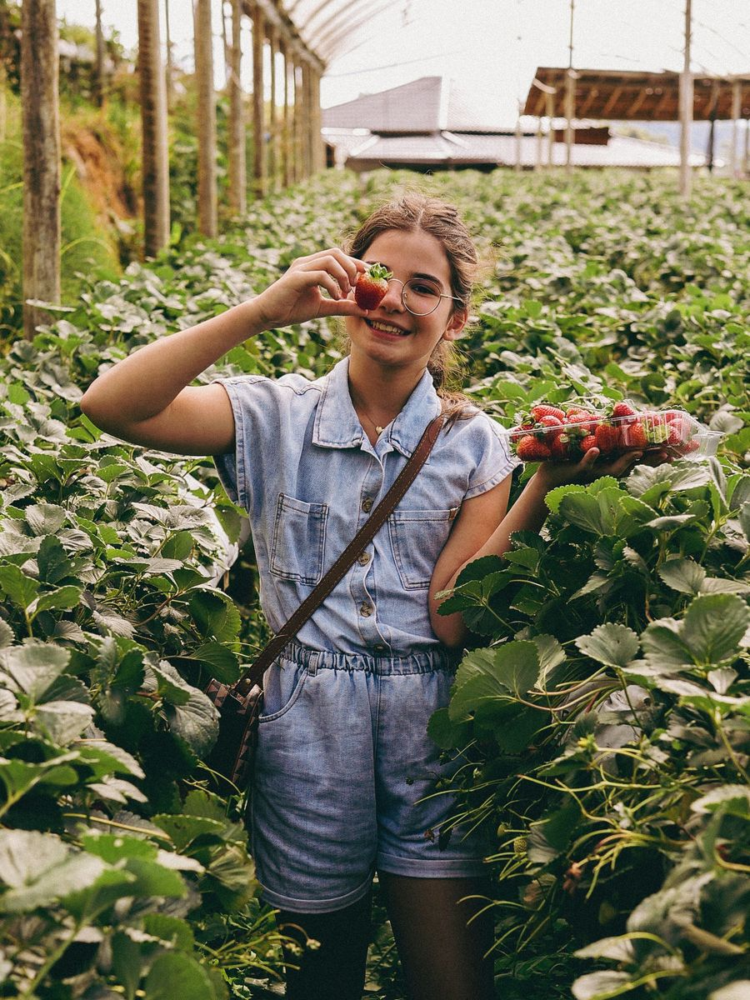
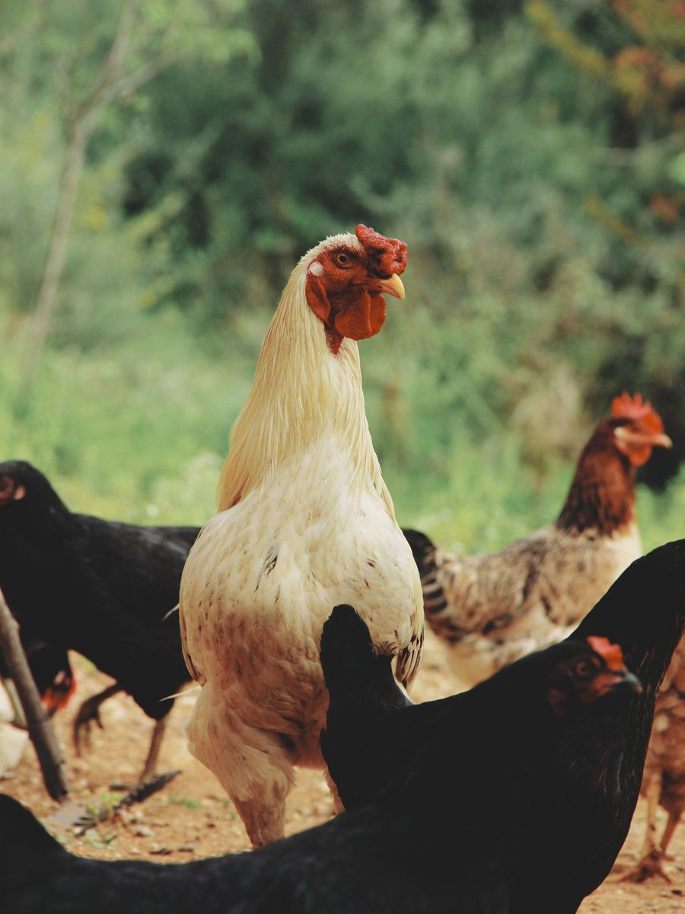
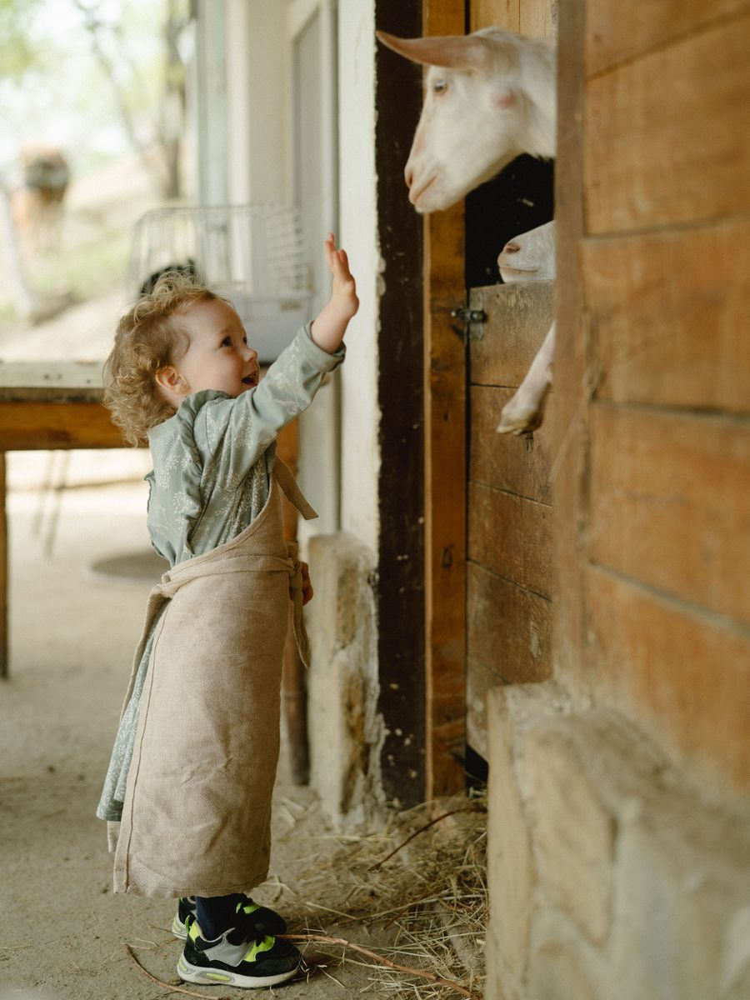
The people who grow it, rear it and pick it
We’re inviting South Devon’s growers, fishers, bakers, brewers, makers and cooks to walk the space with us, talk through what’s possible, and help shape the market before the doors open.
There’s no obligation and no hard sell, just a genuine invitation to come and see, and to be part of the conversation early.
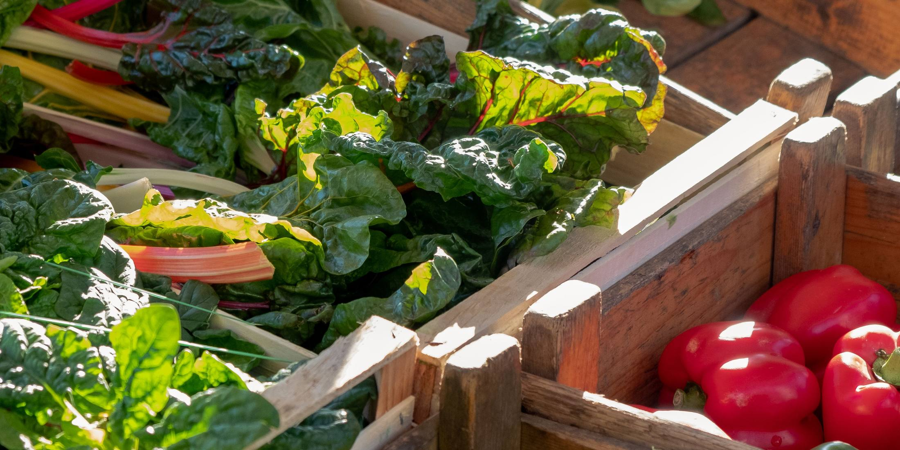
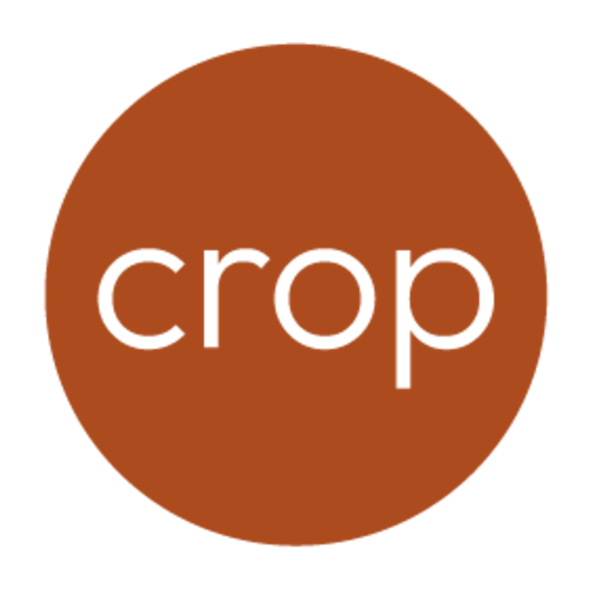
Crop is a collective of like-hearted creatives, professionals in our own spheres of business, coming together to build engaging, regenerative, community-based environments. Our aim is to support local food growers, artisan makers and small-batch producers to find a clear road to market for their goods.
The seed has already sprouted: CLASHcrop at the Dartington Cider Press Centre proved the concept, with four markets run and a trading community handed on. We’re always open to new projects, creative ideas and opportunities to bring local food to local marketplaces. Get in touch to stay informed on our current imaginings and new adventures!
Let’s talk‘Laughter is brightest in the place where food is.’ Old favourites with old friends. New flavours with new ones. A little-bit-of-what-you-fancy or next-level nutrition. There’s not much in life that’s better than sharing a meal you love.
There is enough food to go around. We at Crop mean to measure our success by the quality of the food and the eating experience within a local bioregion. Some foods need to come from afar, and most local food can feed local people.
We are blessed to live in an abundant corner of the world. Whether it’s the luscious dairy creams, the nourishing fruits and vegetables, the succulent river mussels or the gorgeous meats and fish, Devon provides tastes we want to share!

Strategic Director
An inveterate advocate for local food, with 40 years of regenerative organic farming, rearing animals and creating access for everyone to share in the bounty of Devon’s rich mix of produce. Andy is ‘Homme de Terre’.
Operations Director
A hugely varied career spanning film and television production, catering and hospitality, property development, building, festivals, events and rewilding. Director of Circle of Circles CIC and Founder of Men’s Nation… Now, let’s eat!
Director & Consultant
Managing Director at Farmacy and a lifelong chef ‘on a mission to heal people and the planet with life-force food’. Co-creator of Berlin’s Bite Club street food market; formerly head of the award-winning kitchens at 180 The Strand, London.
Director & Consultant
A founder of the Apricot Centre in Dartington, Devon, with a background in NHS services for adopted and looked-after children. Mark develops approaches to wellbeing rooted in nature connection, play, creativity, movement and community resilience.
Newton Old Market
Market Street
Newton Abbot, Devon
TQ12 2RB
A short walk from Newton Abbot rail station, with regular mainline connections to Exeter, Plymouth and beyond. Town-centre car parks and bus routes are moments away.
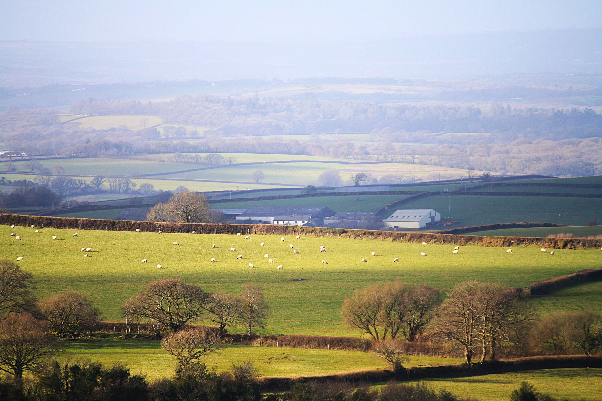